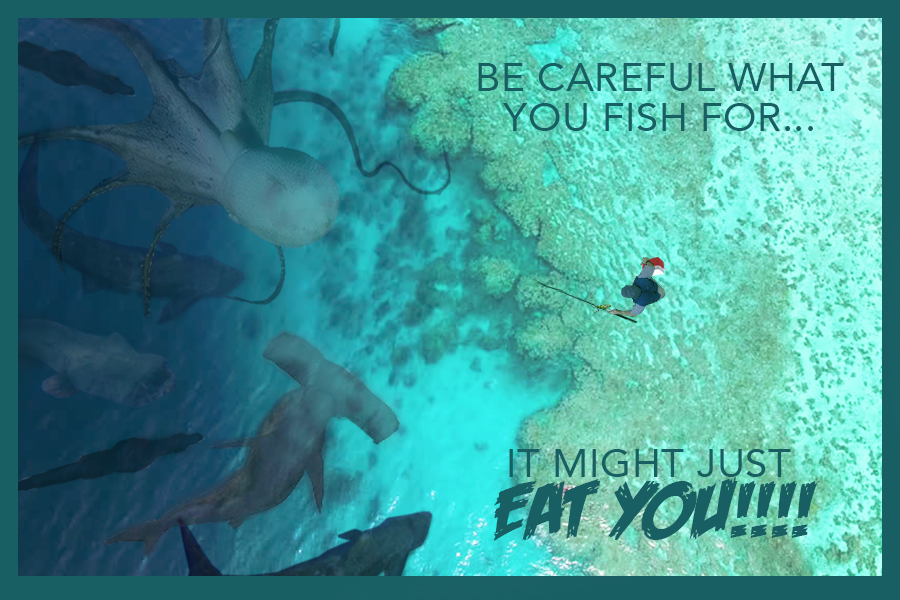

Home | Raster | Vector | Time Based Media | Print Layout | Contact
I like Fish. I like Water. I like Monsters. That's why I made monster fish in water. It was fun and useful because I use photoshop to do a lot of digital drawings. I learn lots of useful shortcuts and time saving tools.